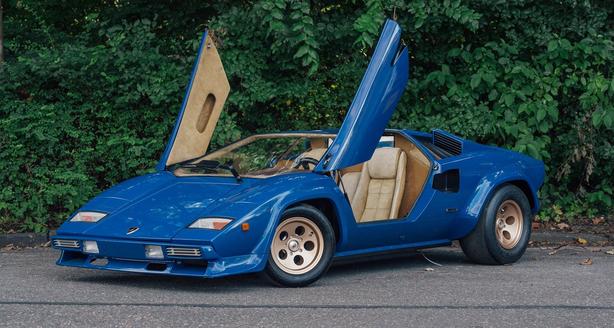

The Lamborghini Countach is a rear mid-engine, rear-wheel-drive sports car produced by the
Italian automobile manufacturer Lamborghini from 1974 to 1990. It is one of the many exotic designs
developed by Italian design house Bertone, which pioneered and popularized the sharply angled "Italian
Wedge" shape. A second generation limited edition Countach, the Lamborghini Countach LPI 800-4 was launched
in 2021. The style was introduced to the public in 1970 as the Lancia Stratos Zero concept car. The first
showing of the Countach prototype was at the 1971 Geneva Motor Show, as the Lamborghini LP500 concept.[7]
